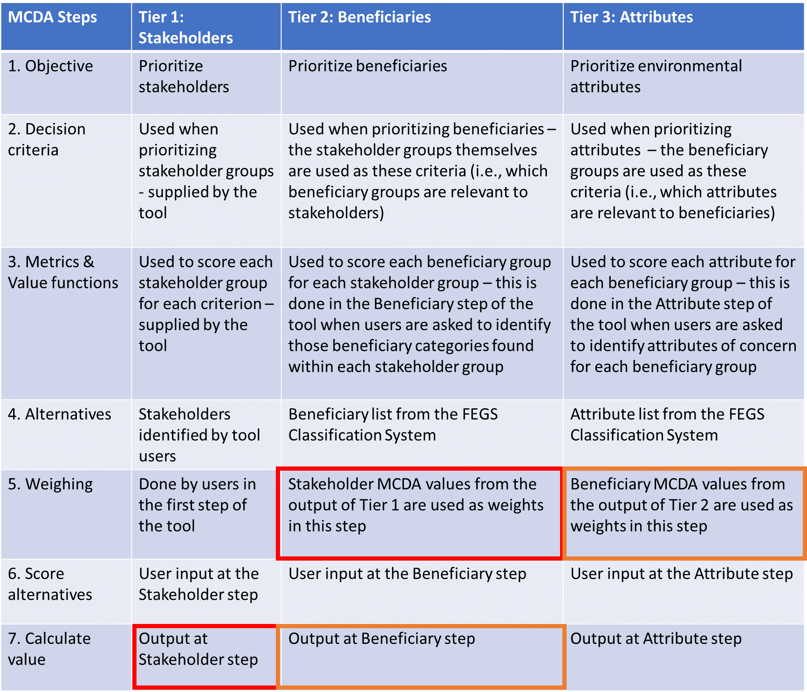
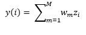
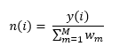

The FEGS Scoping Tool is a multi-criteria decision analysis tool that uses the method of ranking the alternatives on the sum of weighted criteria.
Multi-criteria decision analysis is a formal approach to problem solving that attempts to represent the decision goals in terms of explicitly evaluated criteria (Stewart 1992). The MCDA approach is a transparent method of informing decision making; it formalizes key criteria, explicitly states priorities, and permits easy replication and justification of results. Multi-criteria decision analysis leaves a ‘paper trail’ of the criteria & relative weights used when evaluating alternatives.
MCDA approach allows users to prioritize investments of limited resources and evaluate their choices relative to strategic plans or other higher-level priorities. It allows for a formal exploration of trade-offs (e.g., using different sets of weights to compare the priorities of different groups, manipulating the weights to explore the sensitivity of the tool output, etc.).
Finally, MCDA tools can be used in an iterative and participatory fashion, involving representatives and feedback from various stakeholder groups, providing a clear pathway for stakeholder engagement in the process.
There are seven steps in a generic MCDA process. Different methods will approach these steps in a variety of ways, but the essentials will remain the same. This tool addressed these steps in the following manner:The FEGS Scoping Tool, however, does not merely prioritize the stakeholder groups. It uses that initial prioritization to subsequently also prioritize beneficiary groups, and then environmental attributes. It does this by taking an approach we are calling a tiered MCDA. This approach uses the output from the stakeholder prioritization MCDA as input in a beneficiary prioritization MCDA, and then the output from the beneficiary prioritization as input in an environmental attribute prioritization. This is described in Table 1.
Table 1. The MCDA steps in each of the three tiers of the FEGS Scoping Tool. The colored boxes indicate how the output of one tier is used as an input in the next. The output from Tier 1 (red box) is used as an input in Tier 2 (red box). The output from Tier 2 (orange box) is used as an input in Tier 3 (orange box).
The FEGS Scoping Tool uses calculates a value for each alternative by using summing the weighted scores for each alternative. The value, y(i), of an alternative, i, is calculated as:
where M is the number of possible metrics for which i can be scored, wm is the weight given to each criteria, and zi is the score of alternative i on metric m. The value, y(i), is then normalized, n(i), to a 0 – 100 scale by dividing y(i) by the sum of all weights:
The same calculations are used for each tier of the FEGS Scoping Tool. The output values, n(i), from Tier 1 are then used as the weights, wm, for Tier 2. Subsequently, the output values, n(i), from Tier 2 are used as the weights, wm, for Tier 3.
Reference
Stewart, T.J. (1992). A critical survey of the status of multiple criteria decision making theory and practice. Omega 20:569-586.